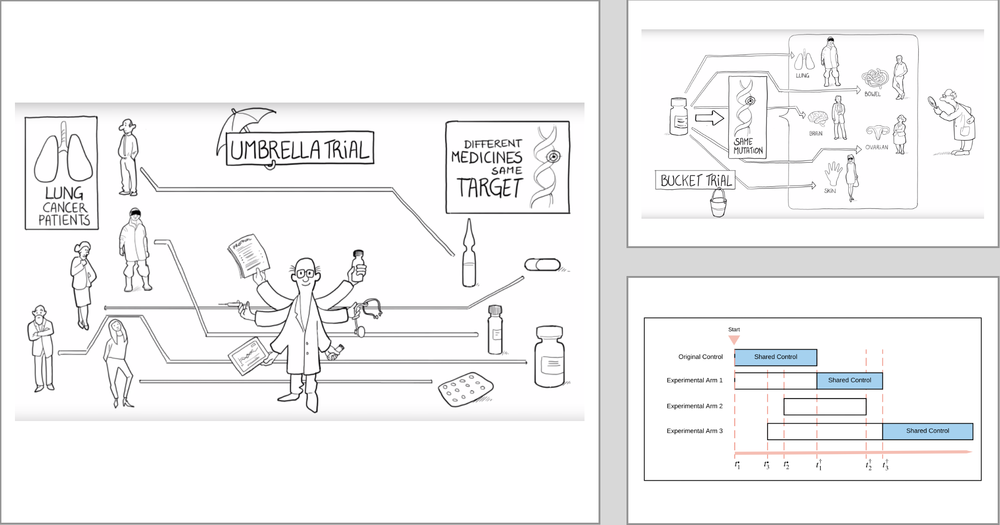

An Introduction to Bayesian Design
Created: 2023-02-15 Wed 08:59
Basic Concepts
Bayes' Rule (or Bayes' Theorem)
\[P(A|B) = {P(A \cap B) \over P(B)} = {P(B|A) P(A) \over P(B)}\]
The Bayesian Approach
\begin{array}{ccccc}
P(A|B) & \propto & P(B|A) & \times & P(A) \\
\Downarrow & & \Downarrow & & \Downarrow \\
\underline{\pi(\theta | \mbox{Data})} & \propto &
\underline{L(\mbox{Data}| \theta)} & \times & \underline{\pi_0(\theta)}\\
\Uparrow & & \Uparrow & & \Uparrow \\
\mbox{posterior knowledge} & \propto & \mbox{information in data} & \times & \mbox{prior knowledge}\\
\end{array}
Features of Bayesian Approach
- Offers a flexible platform for incorporating prior knowledge
- Follows learning paradigm
- Expresses the magnitude and variability of a quantity of interest using the
entire distribution rather than a point estimate or confidence interval
- Inference is straightforward with the distribution
- E.g., point estimation, interval estimation, hypothesis testing, model selection, prediction
- Foundation for decision making in the presence of uncertainty
- Enables highly complex and flexible clinical trial designs
- E.g., adaptive designs, flexible interim monitoring, leveraging historical or real-world data, population pharmacokinetics and pharmacodynamics, etc.
Prior and Prior Elicitation
- Often difficult for experts to provide direct information on parameters of
statistical models
- Model parameterization may be unfamiliar
- Scale of effect in statistical model may be awkward
- e.g., \(\theta \sim \mbox{Beta}(a, b)\)
- In such cases, we elicit information about quantities that are more familiar
to the expert and use that information to induce a prior on the model
parameters
- Could give a best guess and, perhaps, a wide probability interval for the quantity of interest
- Suppose weight loss for a randomly selected individual under a particular treatment can be modeled as \(N(\mu, \sigma^2)\)
- How would we place a prior on \(\sigma\)?
- Since \(\sigma\) is not easy to think about, we could ask questions about the lower quartile of weight losses
- This number has 75% of the values above it and 25% below
- Lower quartile of a normal distribution is \(\mu − 0.675\sigma\)
- If expert’s experience suggests that lower quartile is \(\approx −5\) and that \(\mu \approx −2\), then a natural guess for \(\sigma\) is \[\sigma_0 = (−2 + 5)/0.675 = 4.44\]
- For \(\sigma^2\), could pick a distribution with median or mode equal to the best guess, \((4.44)^2\), that is suitably diffuse
- Need to examine whether other reasonable prior distributions lead to qualitatively similar posterior conclusions
- Start with an expert knowledge-based prior (if available) and consider plausible alternatives to it
- Applying Bayesian inferential tools, obtain posterior inferences based on each prior (expert and alternative) to see affect the choice of prior has on final inferences
- Ideal situation is when there is minimal impact
- Report in any analysis when inferences are sensitive to the choice of prior
Bayesian Hierarchical Models

- Want to account for
- Between-study differences and
- Within-study heterogeneity
- The Bayesian hierarchical model is both natural and flexible for combining information
Bayesian or Frequentist?
- Frequentist conditions on hypotheses
- Assuming that the null hypothesis is true, how likely are data we observed or any unobserved data that are farther from the null hypothesis?
- Bayesian conditions on data
- What do we know about the parameters of interest given the data?
- Given what we observed, how likely is it that the null hypothesis is true?
- Why do we still need frequentist methods in clinical trials?
- Frequentism is particularly well-suited to the role of regulators
- They emphasize procedures that perform well in the long run
Demonstrations
- Consider a phase II single-arm cancer study with a sample size of 20 and 15 responders. What is the response rate?
- What if there are three concurrent similar phase II single-arm cancer studies? Can they learn from one another?
Bayesian Designs
Bayesian Clinical Trial Designs
- "Truly" Bayes
- Make inferential decisions to maximize expected utility
- E.g., Bayesian optimal designs which choose design parameters to minimize the lost or maximize the gain conditioning on prior knowledge
- Calibrated Bayes
- Uses Bayesian approaches for modeling the study data
- Adjusts design parameters to achieve desirable frequentist operating characteristics (e.g., Type I and II error)
Bayesian Designs
- Phase I studies
- Continue reassessment method
- Escalation with overdose control
- BOIN design
- Joint model for efficacy and toxicity
- Phase II studies
- Bayesian continuous monitoring
- Adaptive randomization and dose allocation
- Hierarchical models
- Phase III studies
- Phase II/III seamless trials
- Adaptive sample size
- Futility analyses using predictive probabilities
Case Study I
- There are existing studies, from which informative priors can be extracted for designing a new study
- However, we are not confident that the new study will be similar enough as the existing studies
- Even they are the same, don’t want the prior knowledge to dominate the new study
- Bayesian solution
- Consider a robust prior which is a mixture of informative and non-information priors
- Let \(\alpha\) be the response rate
- A robust prior for \(\alpha\) can be constructed as \[\pi_0(\alpha) = 0.7 Beta(1,1) + 0.3 Beta(45, 15),\] where \(Beta(15, 45)\) is from an existing study
- The mixing weights \(0.7\) and \(0.3\) are design parameters that will need to be elicited from clinicians
- The mixture prior serves as a prior that discounts the prior knowledge
Case Study II
- Consider a study with treatment arms
- B: Chemo + Cemi (High Dose)
- C: Chemo + Cemi (Low Dose)
- Will not have sufficient data to conclude if Arm B is superior to Arm C by frequentist hypothesis testing
- Do want to select one arm from Arms B and C, and ideally select it as early as we can
- The two arms are similar; it will be efficient if we can share information between the two arms
- Bayesian solution
- Let \(\alpha_B\) and \(\alpha_C\) be the pCR rate for arms B and C, respectively
- Model \(\alpha_B\) and \(\alpha_C\) jointly
- Allow information sharing between arms B and C
- Assign a prior to \((\alpha_B, \alpha_C)\) such that
- \(\alpha_C \sim \pi_0(\alpha)\)
- \(\alpha_B|\alpha_C\) has mean \(\alpha_C\) with some variance
- Update the posterior distributions of \(\alpha_B\) and \(\alpha_C\) after every cohort of, say \(5\) patients
- Drop arm \(C\) if \(P(\alpha_B > \alpha_C | \mbox{data}) > 0.6\)
- Drop arm \(B\) if \(P(\alpha_C > \alpha_B | \mbox{data}) > 0.6\)
Special Cases with Complex Design


Summary
Why Bayesian?
- "Good" reasons
- There is external knowledge that should be incorporated
- The study needs a flexible design
- "Not-that-good" reasons
- We do not have a hypothesis to test
- We do not have good knowledge about the treatment
- We do not have a good criterion for determining study success
Next Session in March
- Focus on phase I study designs
- 3+3
- BOIN